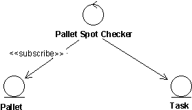
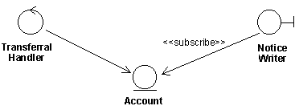
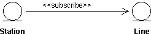
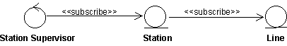

| Рекомендация: Ассоциация подписки |
 |
|
| Связанные элементы |
|---|
ОбъяснениеИногда объект зависит от события, имеющего место в другом объекте. Если событие происходит внутри границы или в рамках управляющего объекта, то этот объект может просто информировать другой объект о наступлении события. Но если событие имеет место внутри сущностного объекта, то ситуация будет другой. Сущностный объект информирует другие объекты только о том, о чем его конкретно попросят. Пример Рассмотрим систему, в которой реализованы переводы денег с банковского счета. Если попытка перевода приводит к отрицательному остатку на счете, то клиенту должно немедленно отправляться извещение. Сам счет является сущностным объектным и не должен отвечать за то, будет уведомлен клиент или нет. Извещение клиенту должен отправить вместо него пограничный объект. В этом примере пограничный объект должен знать, произошло ли событие, которое его интересует, а для этого он должен постоянно запрашивать сущностный объект. Для того чтобы упростить эту задачу и перенести детали реализации на стадию проектирования, создается особая ассоциация, называемая ассоциацией подписки. Ассоциация подписки, связывающая объект любого типа с сущностным объектом, выражает, что связываемый объект будет информирован о событии, произошедшем в сущностном объекте. Рекомендуется использовать ассоциацию подписки только при связи с сущностными объектами, поскольку по своей природе они пассивны, что и приводит к необходимости создавать ассоциацию. С другой стороны, интерфейсные и управляющие объекты могут инициировать коммуникацию. Поэтому они могут вместо подписки использовать другие механизмы.
Ассоциация подписки связывает произвольный объект с сущностным объектом. Связываемый объект будет информирован о том, что в сущностном объекте возникло указанное событие. Обратите внимание, что направление ассоциации указывает, что о связи между двумя объектами знает только объект-подписчик. Описание подписки целиком возложено на объект-подписчик. Связанный сущностный объект определяется обычным образом и не учитывает, что в его функциях могут быть заинтересованы другие объекты. Таким образом, объект-подписчик можно добавлять в модель, не изменяя сущностный объект, с которым он связывается. Ассоциация подписки может быть множественной, при этом указывается, со сколькими экземплярами целевого объекта может создать ассоциацию объект. В описании ассоциации указывается, о каких событиях должен быть информирован объект-подписчик. Таким событием может быть изменение значения ассоциации или атрибута или какой-то части операции. При возникновении события извещение об этом отправляется объекту-подписчику. Никакая информация о результате события не передается, только о самом факте возникновения события. Если объект-подписчик заинтересован в следствиях события и в состоянии сущностного объекта, он должен обычным образом обратиться к сущностному объекту. Это означает, что требуется также создать между ними связь. Пример Например, в депо нужно регулярно проверять состояние платформ. После каждого сотого перемещения платформы с одного пути в депо на другой платформа должна проходить проверку на станции технического контроля. Это моделируется ассоциацией подписки от управляющего класса проверки платформ к сущностному классу платформ. Экземпляры платформ считают число перемещений, для чего предусмотрен счетчик. При каждом сотом перемещении класс проверки получает извещение по условию ассоциации подписки. После этого класс проверки создает особую задачу, которая перемещает платформу на станцию контроля. Класс проверки может не иметь прямой связи с платформой, но должен иметь связь с задачей, которую он запускает.  При каждом сотом перемещении класс проверки создает новую задачу. Условия ассоциации подписки должны выражаться в терминах абстрактных характеристик, а не в терминах конкретных атрибутов или операций. Тем самым объект-подписчик не будет зависеть от содержимого сущностного объекта, которое может меняться. Ассоциация подписки может создаваться не только между двумя экземплярами объекта. Вполне возможно создавать ее между классом и экземпляром, как мета-отношение. Это описано ниже в соответствующих разделах. В некоторых случаях ассоциация подписки может создаваться с классом объектов, например, если соответствующее событие - это создание экземпляра класса. ИспользованиеАссоциация подписки пограничных классовИногда пограничный объект должен быть информирован о событии, имевшем место в сущностном объекте. Для этого создается ассоциация подписки. Пример Рассмотрим пример с банковским переводом со счета. В нем участвует управляющий объект Обработчик перевода, выполняющий операции с сущностным объектом Счет. Если остаток счет оказывается отрицательным, то клиенту отправляется извещение, подготовленное пограничным объектом отправки извещений. Этот объект, таким образом, имеет ассоциацию подписки с объектом Счет. Условие состоит в том, что остаток на счете становится меньше нуля. Информацию об этом событии получает объект отправки извещений. Эта ассоциация подписки работает как ассоциация экземпляров, поскольку экземпляр объекта отправки извещений отслеживает опустошение в экземплярах объектов счетов. Если клиент не требует никакой информации сверх того, что остаток на его счете недостаточен, то никаких действий более не требуется. Но если его также интересует сумма, то объект отправки извещений должен обратиться к счету и выяснить эту сумму. Для этого объект отправки извещений должен иметь связь с объектом Счет.  Пограничный класс отправки извещений подписан на событие уменьшения остатка ниже определенного предела в сущностном объекте Счет. Если класс отправки извещений должен знать точную сумму недостачи, то он должен иметь связь со счетом. Примером мета-ассоциации пограничного класса может быть ситуация, в которой событие в сущностном объекте приводит к тому, что пользователю показывается окно. Тогда класс объекта интерфейса должен быть подписан на события в экземплярах сущностного объекта. Ассоциация подписки из сущностных классовПример Рассмотрим систему, работающую как сеть, в которой узлы - это станции, соединенные каналами связи. Каждая станция связана с другими станциями множеством каналов. Производительность станции определяется тем, сколько ее каналов работает. Если работает более 80% связей, то производительность станции считается высокой, если менее 20% - то низкой, а средние значения соответствуют средней производительности. В этой модели есть два сущностных объекта, станция и канал, и станция имеет ассоциацию подписки с каналом. Условием ассоциации является изменение состояния канала, который может быть включен или выключен, и о чем должна быть извещена станция. Управляющий объект, подписанный на станцию, должен быть извещен, когда производительность станции становится низкой. Это описано далее.  Экземпляр станции получает извещение, как только изменяется состояние одного из ее каналов. Ассоциация подписки между сущностными классами почти всегда является ассоциацией экземпляров, поскольку в ней участвуют, как правило, уже существующие экземпляры. Однако могут быть случаи, когда экземпляр подписанного сущностного объекта создается тогда, когда происходит событие в ассоциированном сущностном объекте. В этом случае это будет ассоциация между классом и экземпляром, то есть - мета-ассоциация. Можно также представить ситуацию, в которой какой-либо сущностный объект должен быть информирован о создании экземпляра другого сущностного объекта. Ассоциация подписки управляющих классовПример В описанном примере сущностный объект Станция имеет ассоциацию подписки с сущностным объектом Канал. Станция будет получать извещения о каждом изменении состояния канала. Изменение состояния будет изменять производительность станции. Если производительность становится низкой, то есть работают менее 20% каналов, то система может снять нагрузку с этой станции, перераспределив потоки в сети. Это не относится к задачам станции, но за это должен отвечать управляющий объект Диспетчер станций, имеющий ассоциацию подписки с каждым экземпляром станций.  Итак, управляющий объект Диспетчер станций подписан на сущностный объект Станция, а последний, в свою очередь, подписан на сущностный объект Канал. Чаще всего ассоциация подписки управляющего объекта будет ассоциацией от класса к экземпляру, или наоборот, то есть, мета-ассоциацией. Экземпляр управляющего объекта для обработки события в сущностном объекте создается только после того, как происходит само событие. Но можно также представить ситуацию, в которой какой-либо экземпляр управляющего объекта должен быть информирован о создании экземпляра сущностного объекта. В таких случаях ассоциация подписки будет ассоциацией экземпляров. Пример В описанном выше примере ассоциация подписки диспетчера станций имеет характеристики мета-ассоциации, то есть информацию об изменении производительности станций получает класс диспетчера станций. Когда диспетчер станций получает такое сообщение, он создает экземпляр, который будет обрабатывать событие. |

© Copyright IBM Corp. 1987, 2006. Все права защищены.. |